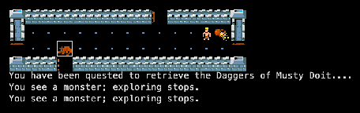
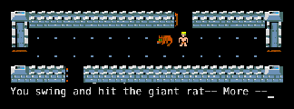
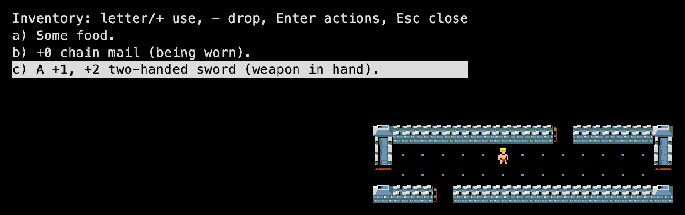

Advanced Rogue is built on the Rogue 3.6 source “with some additions from Super-Rogue”. A group of AT&T Bell Labs employees led by Michael Morgan and Ken Dalka developed it between 1984 and 1986; AT&T distributed it through its Toolchest software service.
The start: choose fighter, magician, cleric or thief.

First steps: “You have been quested to retrieve the Daggers of Musty Doit…”

A fight: “You swing and hit the giant rat.”

Inventory: a fighter’s food, chain mail and two-handed sword.
Trivia
Advanced Rogue was sold by AT&T through its Toolchest software service. (RogueBasin)
There was also a 5.8s version (maybe 1989) with special rooms like an orc den, ant hill, throne room and zoo; none of it made it into later releases. (RogueBasin)
Your quest is picked at random from eleven relics, and the Amulet of Yendor is only one of them. You might have to fetch the Mandolin of Brian or the Morning Star of Hruggek instead. (source: main.c, rogue.c)
Like Rogue 3.6, it refuses to start when the machine is too loaded, unless you are the wizard or the author. (source: main.c)
What's unique
Classes: fighter, magician (spells), cleric (prayers) and thief (stealing, traps), each levelling differently.
A random quest instead of always the Amulet, and you must carry it back up.
Miscellaneous magic in the style of D&D: boots of elvenkind, gauntlets of ogre power, the alchemy jug.
Trading posts, mazes and outdoor levels, and about 120 monsters.
Code dive
Language: K&R C, about 27,700 lines. Items, relics and spells are tables in rogue.c; monsters in their own table (NUMMONST = 120).
Environment: AT&T Unix System V and BSD, curses terminals.
This port: curses shim to X11 and WebAssembly, NetHack tiles. Source: memmaker/arogue5.8.
Stats
Thing
Count
Notable ones
Classes
4
Fighter, magician, cleric, thief.
Monsters
120
Spells
20
Magician spells.
Prayers
15
Cleric prayers.
Relics
11
Daggers of Musty Doit, Cloak of Emori, Ankh of Heil, Staff of Ming, Wand of Orcus, Rod of Asmodeus, Mandolin of Brian, Horn of Geryon, Flail of Yeenoghu, …
Misc. magic
22
Alchemy jug, beaker of potions, dust of choking, necklace of strangulation, boots of dancing, Keoghtom’s ointment.
Potions
12
Scrolls
17
Rings
24
Wands & staffs
20
Weapons
19
Armour
10
Manual
“The Dungeons of Doom” (AT&T Bell Laboratories), the guide shipped with the source: read it here (text).
Getting started
Open the game and pick a class (the fighter is the easiest start); accept or re-roll the stats.
Read the quest message: that item must come back to the surface.
Move with hjklyubn or the arrows; x explores; Enter lists every command.